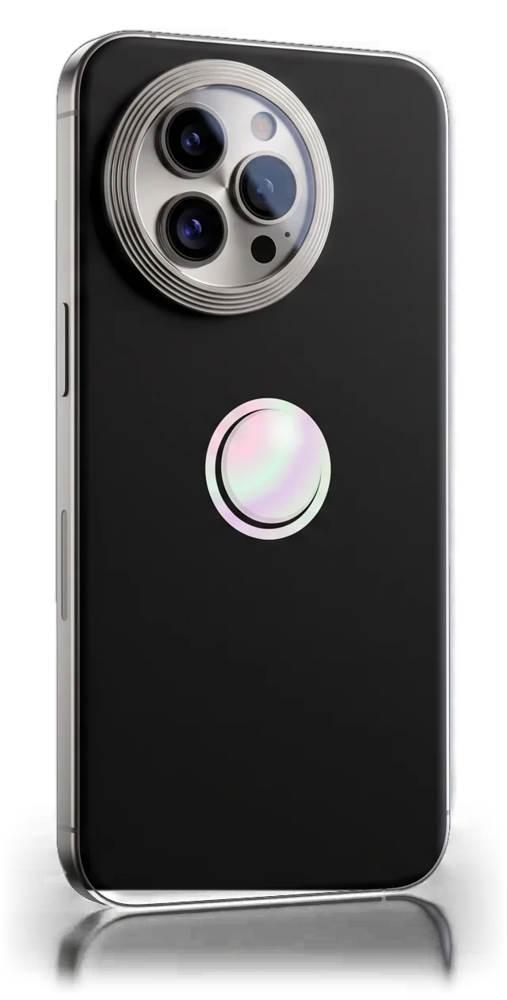
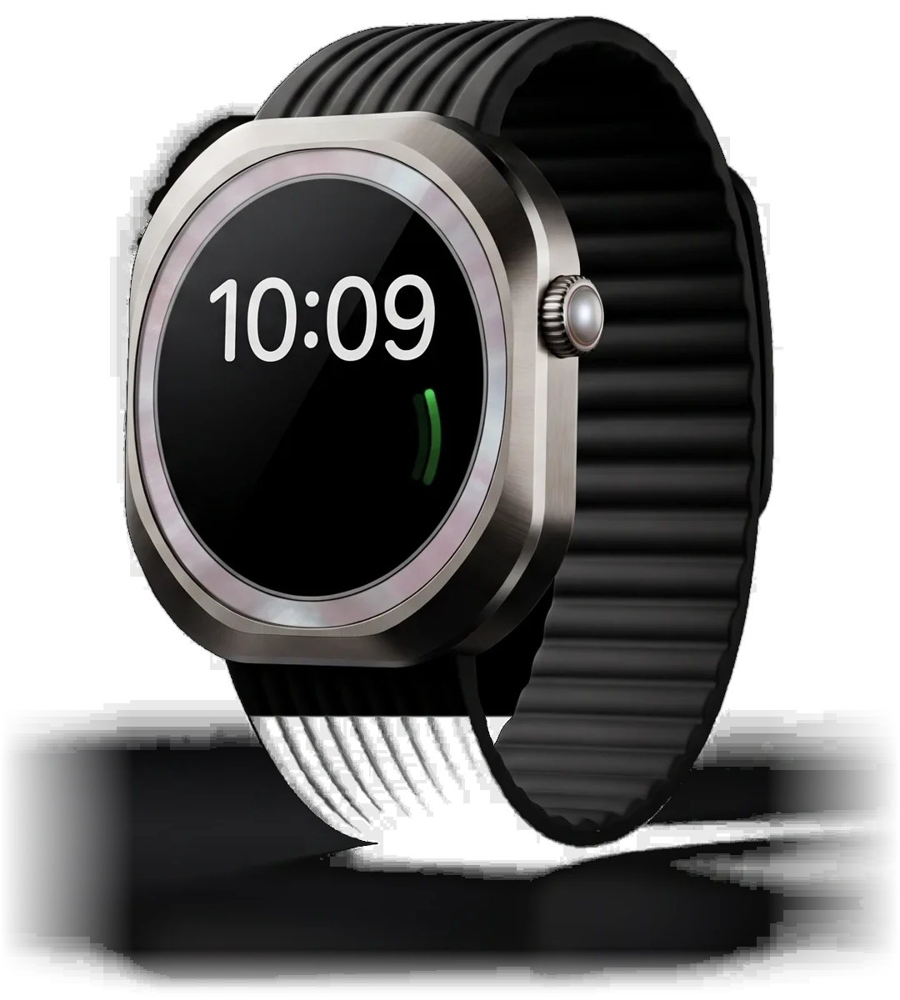
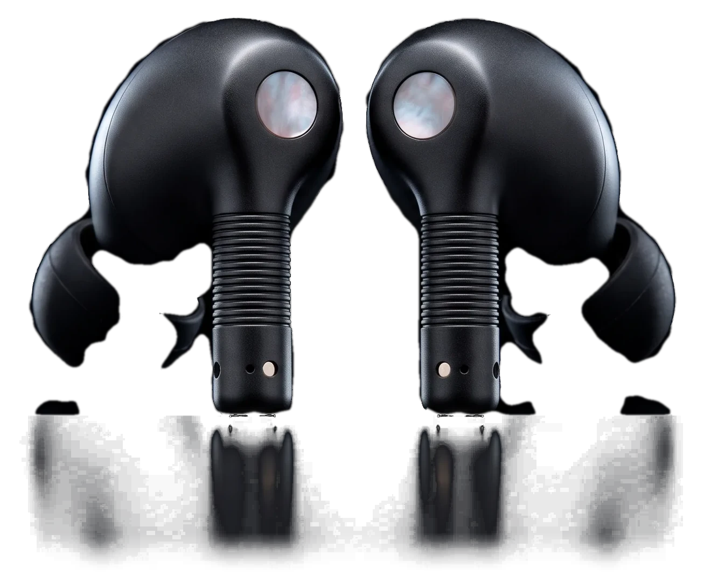

Nácar Faro
The light that stays on.
From ₹1,19,900

The light that stays on.
From ₹1,19,900

Three days off the grid.
₹79,900

The world, turned down.
₹24,900
Materials
Grade 5 titanium frame
Black ceramic back, a mother-of-pearl disc under sapphire crystal
Grade 5 titanium case
Mother-of-pearl bezel under sapphire, pearl cabochon crown
Matte black buds
A polished mother-of-pearl disc on each bud, a pearl seam on the case
Form
199 g
The lightest Faro yet, milled from one billet
49 mm, 52 g
Rounded octagon, brushed flats and polished chamfers
Ridged stems
The grooves are the remote: squeeze, slide, hold the pearl
Finishes
Titanium, Nácar, Grafito
Titanium, Grafito, Nácar
Ribbed band, pin-and-tuck clasp
Black, with pearl
Screen
6.7-inch display
3,000 nits in midday sun, a soft glow after dark
Round, always on
3,000 nits peak, down to 1 nit at night
No display
Battery life
Up to 48 hours
Mixed use from one charge of the 5,100 mAh cell
Up to 72 hours
144 hours in low-power mode, 36 hours on a dual-band GPS workout
Up to 8 hours
With noise cancellation on, 40 hours in total with the case
Charging
60% in 25 minutes
On a 45W adapter, or 25W wireless with ring charging
0 to 80% in 45 minutes
About an hour from 5 minutes
The case tops up by USB‑C or wireless
Inside
F3 chip
3 nm, six CPU cores at up to 4.2 GHz
Three cameras
50MP main from ƒ/1.4 to ƒ/4.0, 5× telephoto, 48MP ultra wide, 4K at 120 fps
Health sensors
Heart rate, a rhythm check at the pearl crown, blood oxygen in 15 seconds, sleep stages
Noise cancellation
Retunes itself 48,000 times a second, up to 3× more than our previous earbuds
Six microphones
Beam-forming, with an 11 mm custom driver and spatial audio
Water, dust and wear
IP68
Six metres of water for 30 minutes, a ceramic back harder than steel
100 m water resistance
Rated for dives, tested from −20 °C to 55 °C, drop and dust tested
IP57
Buds and case resist dust, sweat and water. Not for swimming.
Signal
Beacon SOS
No signal? Faro finds a satellite and sends where you are
Dual-frequency GPS
L1 and L5 hold the track in canyons and between tall buildings
Lossless audio
Up to 24-bit/96 kHz from a paired Nácar Faro
With the rest of the family
Unlocks with Pulso
Wear Pulso and Faro opens as you pick it up
Lossless to Onda
Up to 24-bit/96 kHz, only with Faro
Unlocks your Faro
From the wrist, while Pulso is on and unlocked
Switches between them
Moves from Faro to Pulso on its own, whichever you are using
Battery life varies with use and settings. IP ratings under IEC 60529 in lab conditions. No-cost EMI on select cards.